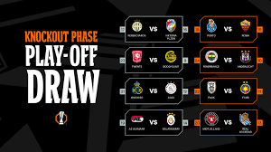

UEFA Avropa Liqası, əvvəlki adı: UEFA Kuboku (ing. UEFA Cup) — UEFA-nın təşkil etdiyi klub turniri. UEFA Çempionlar Liqasından sonrakı ən əhəmiyyətli klub turniridir.
2009-cu ilin iyun ayında köhnə adı UEFA Kuboku olan çempionat, turnirin USL standartlarına çatması üçün köklü bir sıra dəyişikliklər edilmiş, bununla da 2009–10 mövsümündən etibarən indiki adı ilə təşkil edilməyə başlanmışdır. Bu dəyişikliklər nəticəsində UEFA Avropa Liqası UEFA Kubokunun davamı olaraq qəbul edilmişdir.
1955-ci ildə başladılan Şəhərlər Kuboku, UEFA Kubokunun öncəki adıdır. 1971-ci ildə Şəhərlər Kubokunun adı UEFA Kuboku olaraq dəyişdirilmişdir. 1999-cu ildə isə UEFA Kubok Qalibləri Kuboku qaldırılaraq UEFA Kuboku ilə birləşdirilmişdir. 2004–05 mövsümü əvvəli qrup mərhələlərində bəzi status dəyişiklikləri edilən kubok 2009-cu ildəki son tənzimləmə ilə indiki halını almışdır. Son dəyişikliklərdə ad və status yenilənməsinin yanında kubok UEFA İntertoto Kuboku ilə də birləşdirilmişdir.
Kubokun ilk çempionu 1972 UEFA Kuboku Finalında rəqibini məğlub edən Tottenhem Hotspurdur. Ad dəyişikliyindən sonra ilk çempionluğu qazanan komanda isə 2010 UEFA Avropa Liqası Finalında Fulhemi 2–1 məğlub edən Atletiko Madriddir. Kuboku ən çox qazanan komanda isə yeddi dəfə çempionluq yaşayan İspaniya təmsilçisi Sevilyadır.
Açılış ili 1971
Region UEFA (Avropa)
Komandaların sayı 36 (liqa mərhələsi)
143 (ümumi)
Son çempion İngiltərə Tottenhem (3 dəfə)
Ən uğurlu klub İspaniya Sevilya (7 dəfə)
TV yayımçıları Azərbaycanda: CBC Sport
Ən çox uğur qazanmış klublar
Klub Çempion Finalçı Çempion olduğu il Finalçı olduğu il
İspaniyaSevilya 7 0 2006, 2007, 2014, 2015, 2016, 2020, 2023
İngiltərəLiverpul 3 1 1973, 1976, 2001 2016
İtaliyaYuventus 3 1 1977, 1990, 1993 1995
İtaliyaİnter Milan 3 2 1991, 1994, 1998 1997, 2020
İspaniyaAtletiko Madrid 3 0 2010, 2012, 2018
AlmaniyaBorussiya Münhenqladbax 2 2 1975, 1979 1973, 1980
İngiltərəTottenhem 2 1 1972, 1984 1974
NiderlandFeyenoord 2 0 1974, 2002
İsveçGöteborq 2 0 1982, 1987
İspaniyaReal Madrid 2 0 1985, 1986
İtaliyaParma 2 0 1995, 1999
PortuqaliyaPortu 2 0 2003, 2011
İngiltərəÇelsi 2 0 2013, 2019
BelçikaAnderlext 1 1 1983 1984
NiderlandAyaks 1 1 1992 2017
NiderlandPSV Eyndhoven 1 0 1978
AlmaniyaAyntraxt Frankfurt 1 0 1980
İngiltərəİpsviç Taun 1 0 1981
AlmaniyaBayer Leverkuzen 1 0 1988
İtaliyaNapoli 1 0 1989
AlmaniyaBayern Münhen 1 0 1996
AlmaniyaŞalke 1 0 1997
TürkiyəQalatasaray 1 0 2000
İspaniyaValensiya 1 0 2004
RusiyaÇSKA Moskva 1 0 2005
RusiyaZenit Sankt-Peterburq 1 0 2008
UkraynaŞaxtyor Donetsk 1 0 2009
İngiltərəMançester Yunayted 1 1 2017 2022
PortuqaliyaBenfika 0 3 1983, 2013, 2014
FransaOlimpik Marsel 0 3 1999, 2004, 2018
İspaniyaAtletik Bilbao 0 2 1977, 2012
İspaniyaEspanyol 0 2 1988, 2007
AlmaniyaBorussiya Dortmund 0 2 1993, 2002
İngiltərəArsenal 0 2 2000,2019
İngiltərəVolverhampton Uanderers 0 1 1972
NiderlandTvente 0 1 1975
BelçikaBrügge 0 1 1976
FransaBastiya 0 1 1978
Srvena Zvezda 0 1 1979
NiderlandAZ Alkmaar 0 1 1981
AlmaniyaHamburq 0 1 1982
MacarıstanVideoton 0 1 1985
AlmaniyaKöln 0 1 1986
ŞotlandiyaDandi Yunayted 0 1 1987
AlmaniyaŞtutqart 0 1 1989
İtaliyaFiorentina 0 1 1990
İtaliyaRoma 0 1 1991
İtaliyaTorino 0 1 1992
AvstriyaZalsburq 0 1 1994
FransaBordo 0 1 1996
İtaliyaLatsio 0 1 1998
İspaniyaAlaves 0 1 2001
ŞotlandiyaSeltik 0 1 2003
PortuqaliyaSportinq 0 1 2005
İngiltərəMidlsbro 0 1 2006
ŞotlandiyaReyncers 0 1 2008
AlmaniyaVerder 0 1 2009
İngiltərəFulhem 0 1 2010
PortuqaliyaBraqa 0 1 2011
UkraynaDnepr 0 1 2015
Ən müvəffəqiyyətli ölkələr
Yer Ölkə Çempion Finalçı
1 İspaniya İspaniya 11 5
2 İngiltərə İngiltərə 9 7
3 İtaliya İtaliya 9 6
4 Almaniya Almaniya 6 8
5 Niderland Niderland 4 3
6 Portuqaliya Portuqaliya 2 5
7 İsveç İsveç 2 0
8 Rusiya Rusiya 2 0
9 Belçika Belçika 1 2
10 Ukrayna Ukrayna 1 1
11 Türkiyə Türkiyə 1 0
12 Fransa Fransa 0 5
13 Şotlandiya 0 3
14 Avstriya Avstriya 0 1
15 Yuqoslaviya 0 1
16 Macarıstan Macarıstan 0 1